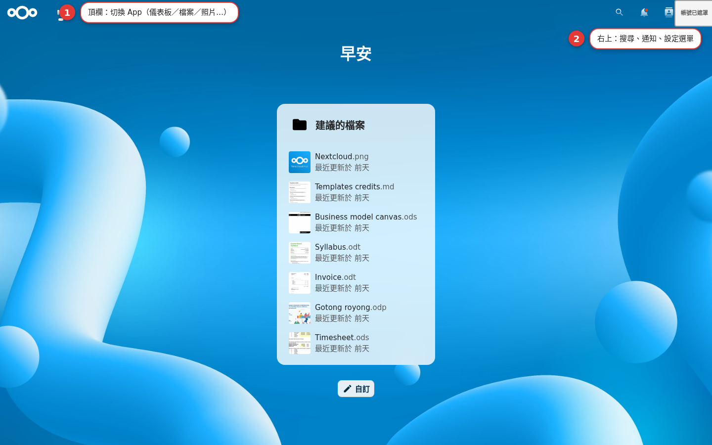

Interface tour
Get to know the skeleton of the Nextcloud screen: the app navigation across the top, the tools at the top right, and the left-hand list inside each app. By the end of this chapter, you'll know where every button is, and you will not get lost again.
Learn the map first
Nextcloud is not only files. There is a whole row of apps for photos, calendars, chat and more, and they all share one interface skeleton: the top switches apps, the top right holds the tools, and the left is the list for the app you are in. Once you can read that skeleton, every app after this one comes quickly.
The three areas of the screen
| Area | Where it is | What it handles |
|---|---|---|
| Top-bar app navigation | The row across the top | Switches apps: Dashboard, Files, Photos, Activity and so on |
| Tools at the top right | The far right of the top bar | Unified search, notifications, Contacts, and the settings menu (your avatar) |
| The app content area | The middle and the left | The left-hand list for that app + the main content area |
Six steps through the interface
Look at the app icons in the top bar
The row of icons across the top switches apps: Dashboard, Files, Photos, Activity and so on (depending on which apps are installed). Click an icon and you are in that app.
Click "Files" to open the app
Files is the app you will use most: the file list sits in the middle, and the left holds categories such as "All files / Favorites / Shared / Trash bin".
Try "unified search" at the top right
The magnifying-glass icon searches across apps for files, contacts, events and more.
Check the "notifications" bell
Someone sharing a file with you, someone mentioning you, and system messages all land here.
Open the "settings menu" at the top right (your avatar)
Inside are personal settings, theme and log out, plus "Administration settings" for admins.
Go back to "Dashboard"
Click the Dashboard icon on the far left to return to the overview page; day to day, this is where you jump to the things you use most.

Apps and what they do
Every Nextcloud feature comes as an "app", and the icons in the top bar map onto the chapters here:
| App | What it does | Chapter |
|---|---|---|
| Files | File uploads, folders and sharing | Chapters 6-9 |
| Photos | The photo timeline and albums | Chapter 10 |
| Calendar | Events and reminders | Chapter 11 |
| Contacts | Your address book | Chapter 12 |
| Talk | Chat and video | Chapter 13 |
| More | Deck, Office, Notes, Tasks… | Chapters 14-17 |
Common interface pitfalls
There are hardly any icons in the top bar
That means only a few apps are enabled. For more, ask your admin to enable them from the Apps store.
The layout breaks or the page loads slowly
Refresh the page. The first load, or one with a lot of data, is slower; after that it smooths out.
You cannot find settings or log out
Both are in the "settings menu" behind your avatar at the top right.
The interface looks different on a phone
A phone browser gets the compact layout; or switch to the mobile app (Chapter 19).
Interface FAQ
Why does login land me on Dashboard instead of Files?
Can I change the order of the apps in the top bar?
What can unified search find?
Can I customize the Dashboard widgets?
How do I change the interface language?
Official sources
| Source | What to verify |
|---|---|
| Nextcloud user manual: the interface and preferences | Interface elements and personal preferences |